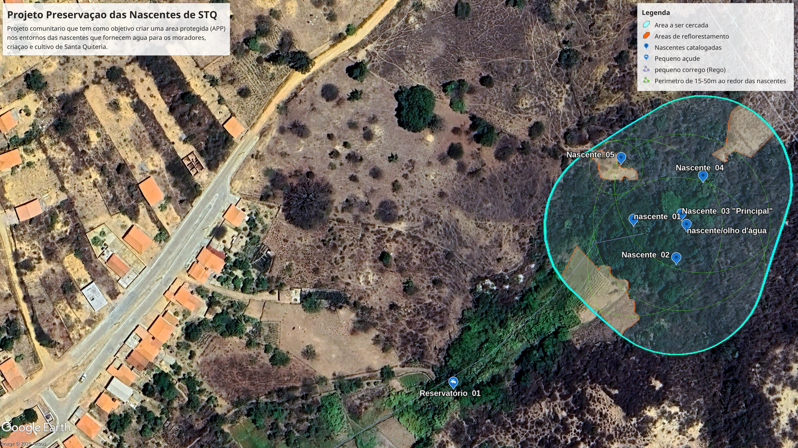

Sobre o Projeto
Este projeto de iniciativa civil tem como pilar fundamental a preservação e recuperação das matas originais e áreas no entorno das nascentes, riachos e olhos d’água da comunidade de Santa Quitéria, Ibitiara - BA. Nosso objetivo é garantir a segurança hídrica e ambiental para os moradores de hoje e para as futuras gerações.
Água é um bem imensurável e essencial para a vida. Não podemos permitir que o esgotamento hídrico registrado em povoados vizinhos aconteça com as nossas fontes. Centenas de pessoas, assim como os animais de criação da agricultura familiar, dependem diretamente desses recursos hídricos.
Adequação Ambiental e Áreas de Preservação (APP)
Buscamos uma conciliação harmônica e pacífica entre produtores rurais, moradores locais e a legislação ambiental, fundamentando nossas ações no Código Florestal Brasileiro (Lei n° 12.651/2012).
- Nascentes e Olhos d'Água: Raio mínimo de 50 metros de proteção ao redor do ponto de exsurgência.
- Cursos d'Água Naturais Perenes: Faixa marginal mínima de 30 metros em ambas as bordas.
- Lagos e Lagoas Naturais: Faixa de 50 metros ao entorno na zona rural.
- Pequenas Propriedades Familiares (Uso consolidado anterior a 2008): Regulamentação específica com faixas adaptadas de 5 a 15 metros (Que é o nosso caso).
Nas áreas identificadas como prioritárias, a conservação é feita por meio do cercamento, limpeza de resíduos e contenção de ervas daninhas que prejudicam a flora original. Nos locais onde a mata ciliar foi degradada, orienta-se o reflorestamento com espécies nativas ou o isolamento da área para que a regeneração natural aconteça.
Ações já Realizadas no Projeto
Da minha parte, Rivelino Domingo de Oliveira, as primeiras ações foram, fazer um estudo acerca da lei que norteia os interesse de preservação referente as nascentes, lagos e fluxos de águas naturais, depois fomos para campo eu e Jorge Alexandre de Oliveira, tirar algumas fotos e pegar coordenadas geográficas...
União Comunitária e Apoio Institucional
Reconhecendo as limitações dos órgãos públicos no acompanhamento contínuo em áreas extensas, a força principal desta iniciativa reside na conscientização dos moradores.
Para dar solidez e transparência ao movimento, atuamos em conjunto com a Associação dos Produtores e Melhoramentos de Santa Quitéria. Esta parceria formaliza nossa comunicação com órgãos ambientais do município e do estado, viabilizando novos estudos de campo, apoio técnico e recursos para o projeto.
Galeria de Fotos
Confira os registros de campo, nascentes catalogadas e paisagens da nossa região (clique na imagem para ampliar):


